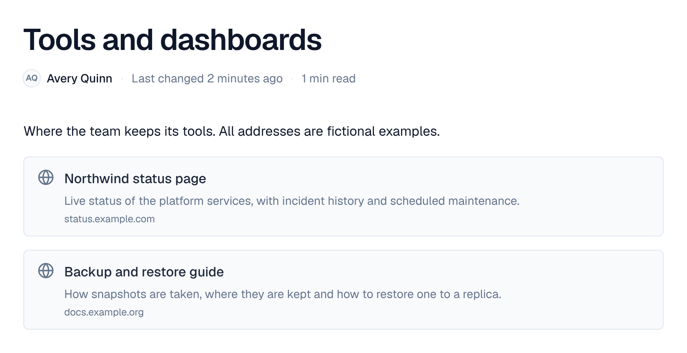
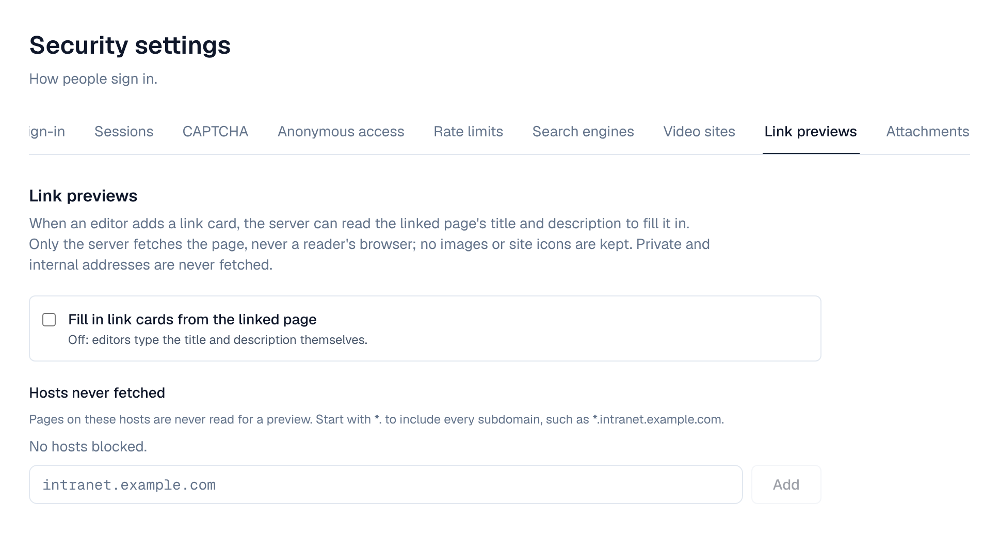

1. Overview
A Link card shows a link as a box with a title, a short description and the site's name, so readers see where it goes before they follow it. Insert one with /link card.

2. Add a link card
- Insert it — Type /link card (or /card, /bookmark).
- Give the link — A web address (https://…) or a path on this wiki (/spaces/…).
- Fill it in — Fill in from the page reads the linked page's title, description and site name, when your administrator has turned link previews on. Otherwise, or if the page can't be read, type them yourself.
- Check and save — Change anything the page gave; Description and Site name are optional. Add puts the card in the page.
- Select a card to change it (Change the link card), remove it, or Turn into a link: the card becomes an ordinary link with its title as text.
- The card keeps the text it was saved with: readers never make the Wiki or their browser read the other site, and the card shows no picture or icon from it. To refresh the text, change the card and fill it in again.
- A card to another site opens it in a new tab; a card to a wiki page opens it in the same tab.
- A title has up to 200 characters, a description 300 and a site name 100. A page holds up to 100 link cards.
Word and PDF downloads print a card as a box with its linked title, description, site and address. Confluence Smart links shown as cards, Widget connector and iframe macros become link cards when imported, or videos when they show YouTube or Vimeo.
3. Link previews
Filling in a card from the linked page needs link previews, which are off until an administrator turns them on in Settings → Security → Link previews (settings:write).

| Setting | Default | Effect |
|---|---|---|
| Fill in link cards from the linked page | Off | Off: editors type the title and description themselves. |
| Hosts never fetched | None | Pages on these hosts are never read for a preview, such as intranet.example.com. Start with *. to include every subdomain (*.intranet.example.com). Up to 100. |
How a preview is read:
- Only the Wiki's server reads the page, never a reader's browser, and only when an editor asks for it.
- Private, internal and loopback addresses are never read, nor addresses that lead to one through a redirect, whatever the blocked list says.
- Only http and https on their usual ports, at most 3 redirects, 5 seconds and the first 512 KB of the page. The page's title, description and site name are read; images and site icons never are.
- Pages that aren't HTML in UTF-8 can't be read, and Couldn't read that page asks the editor to type the text. It never says why, so a preview can't be used to probe your network.
- Answers are kept for a day. Each person may ask for 20 previews a minute, and only in spaces where they edit pages.
Changing the setting raises link_previews.update, which a policy can refuse, and is in the audit log.
4. API
| Method | Path | Who | What |
|---|---|---|---|
| GET | /api/wiki/link-previews | Signed in | Whether previews are on; the blocked hosts for settings:write |
| PUT | /api/wiki/link-previews | settings:write | {enabled, blockedHosts} |
| POST | /api/wiki/link-preview | Edit pages of the space | {space, url}: the page's title, description and site name. Refused with link_previews_off, invalid_link or preview_unavailable |